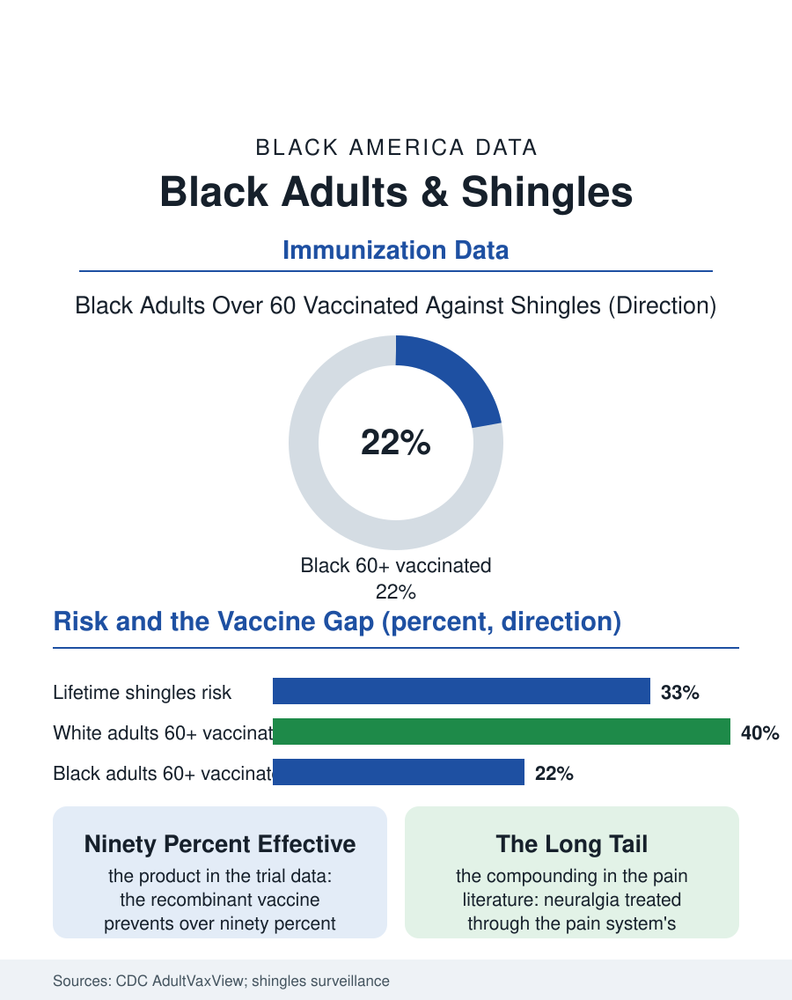

Black Public Health
The Second Act: Black Adults and Shingles
A ninety-percent-effective vaccine guards against a one-in-three lifetime risk, and Black adults receive it at half the white rate. The shingles file.

Shingles is the chickenpox virus's second act: decades after the childhood infection, the virus sleeping in the nerve roots reawakens as a band of pain and rash, and in a fraction of cases as postherpetic neuralgia, nerve pain that can persist for months or years. A highly effective vaccine exists. Black adults, who carry the virus like everyone and suffer the complication burden heavily, receive that vaccine at markedly lower rates than white adults in the immunization data. This article reads the shingles file.
The Virus Everyone Carries
The epidemiology is universal and specific at once. Nearly every American adult of the generations before the chickenpox vaccine carries varicella-zoster virus, and roughly one in three will develop shingles across a lifetime, the risk climbing steeply after fifty as the immune surveillance that keeps the virus dormant wanes, and climbing faster in the immunocompromised, a category whose Black composition reflects the HIV, diabetes, and cancer treatment files. The incidence data by race contain the file's nuance: measured shingles incidence among Black adults runs somewhat below white rates in several surveillance studies, a difference researchers attribute partly to the immunology of childhood exposure patterns, while the outcomes data run the other way, Black patients presenting later, hospitalized more, and carrying the neuralgia complication, the outcome patients fear most, at rates the pain literature flags. The eye chapter is the emergency: shingles on the face can threaten vision, and the ophthalmology referral's speed decides the result, inserting the access file's variables into a forty-eight-hour window.
A Vaccine and Its Uptake Gap
The vaccine story is a modern success with a distribution problem. The current recombinant vaccine, introduced in the late 2010s, posts efficacy above ninety percent in the trials, a figure few vaccines match, and the recommendation covers adults fifty and older and younger immunocompromised adults. The uptake data in the national immunization surveys show the now-familiar pattern at a steep gradient: white adults over sixty report shingles vaccination at rates approaching double those of Black adults of the same age in several survey years, a gap wider than for the flu shot and comparable to the widest in the vaccine file. The mechanisms sort differently than the childhood vaccine gaps, which matters for the repair: this vaccine lives in the pharmacy and the adult primary care visit, costs money under some coverage configurations in ways that generated point-of-sale confusion for years, requires two doses months apart, and produces a famously sore arm and a day of flu-like misery that the word-of-mouth economy prices into the second dose's completion rate. Adult immunization has no school mandate, no registry discipline, and no pediatrician's schedule behind it; it is the file where American prevention is most purely voluntary, and therefore where its distribution most faithfully reflects access, information, and trust as they actually stand.
Pain's Long Tail
The complication that gives the vaccine its value is postherpetic neuralgia, pain in the rash's territory persisting after the skin heals, arriving in a substantial minority of older cases and resisting the pain formulary with a stubbornness the chronic pain file recognizes: the gabapentinoids, the topical agents, the tricyclics, each partial, each with its own burden in an older body. For Black patients the neuralgia chapter compounds with the pain treatment disparities documented across this atlas, the under-prescription and under-belief data, so that the same eruption produces, on average, a longer and less relieved pain course in a Black body, a sequela chain that begins with a vaccine not offered in a pharmacy three years earlier. The prevention file therefore closes its loop with unusual clarity: a two-dose series, ninety percent effective, against a one-in-three lifetime risk and a painful tail, with an uptake gap of the widest kind in the adult vaccine schedule. The interventions that move adult vaccines in the data are unglamorous and known: the standing order in the clinic, the pharmacist's prompt at the counter, the registry reminder that survives the phone number, the first dose's scheduling of the second before the patient leaves, the machinery of the mundane. The shingles file closes on the nerve root where the virus sleeps in nearly every reader of this atlas. It will wake in a third of them. The file's data say the alarm clock is a vaccine, and that whose sleep it guards is currently decided by the ordinary machinery of American access, running, as usual, at two speeds.
More in Black Public Health
Hypertension Among Black Adults: Prevalence, Control, and Consequences
About 55 percent of Black adults have hypertension — the highest rate of any U.S. group. Prevalence, onset, control, and the stroke, heart, and kidney consequences in the data.
Diabetes Among Black Adults: Prevalence and Complications
Nearly one in five Black adults has diabetes, diagnosed or undiagnosed — and its complications fall with particular weight. The CDC data on prevalence, control, and outcomes.
Black Life Expectancy: The Gap at Birth and Its Causes
Black life expectancy at birth is about 73 years, roughly five years below the national figure — the summary measure of every health gap in this section. The CDC data.
Source: Centers for Disease Control and Prevention, National Health Interview Survey and AdultVaxView vaccination data; shingles surveillance studies.